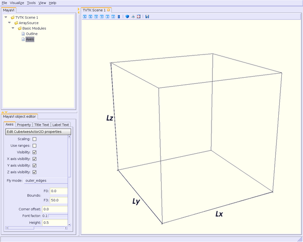

TableOfContents
These modules are called “basic” because they are general and independant to all kind of data.
Before using a module, remind that you have to import it.
In general, if you want to change the color of an object, you have to type:
module.actor.property.color = fg_color
where fg_color is a “tuple”, say (0, 0, 0) for black.
Note: You can set color for each module/filter (when available, of course), as above. But you can also set background/foreground colors for all your !MayaVi2 sessions. See [:Cookbook/MayaVi/Tips: Cookbook/MayaVi/Tips]. So, your background and foreground colors may (in fact, must) be different from those in the pictures presented here.
Nothing special for this very simple module.
Begin to import the Outline module:
from enthought.mayavi.modules.outline import Outline
then
fg_color = (0, 0, 0) # black foreground color
o = Outline()
script.add_module(o)
o.actor.property.color = fg_color
For axis, you can set several parameters:
Here’s what you can type:
from enthought.mayavi.modules.axes import Axes
then
a = Axes()
script.add_module(a)
a.axes.property.color = fg_color # color for axes
a.axes.axis_title_text_property.color = fg_color # color for axes title
a.axes.x_label = "Lx" # label for Ox axis
a.axes.y_label = "Ly" # label for Oy axis
a.axes.z_label = "Lz" # label for Oz axis
a.axes.label_format = "" # no dimensions displayed
a.axes.axis_label_text_property.color = fg_color # in case we want to displa
y them
Label format is the format for the dimensions along Ox, Oy and Oz axis. By default, it is set to %6.3g.
!OrientationAxes module will display a little trihedron in the corner of the render window, showing the orientation of the three axes, Ox, Oy, Oz.
Note: VTK > 5.0 must be installed in order to use this module.
Nothing special here, as the Outline module, you can set the labels color:
from enthought.mayavi.modules.orientation_axes import OrientationAxes
and
oa = OrientationAxes()
script.add_module(oa)
oa.text_property.color = fg_color
You can use this module to display a title for your rendering window.
You need a text (a string), and you have to set up its position in the window (coordinates go from 0 to 1 in x and y) with the x_position and y_position parameters.
Then you can set up the height and the width of your text:
from enthought.mayavi.modules.text import Text
and
# I like my title centered and at top of the window
t = Text()
t.text = "My Title Centered at the Top"
script.add_module(t)
t.actor.scaled_text = False
t.actor.text_property.font_size = 34
t.actor.text_property.color = fg_color
# have to find out text width to center it. Tricky, but works fine. Thanks to Pr
#abhu.
t.width = 1.0*t.actor.mapper.get_width(t.scene.renderer)/t.scene.renderer.size[0
]
height = 1.0*t.actor.mapper.get_height(t.scene.renderer)/t.scene.renderer.size[1
]
t.x_position = 0.5-t.width/2
t.y_position = 1-height
Now, we will present how to set up the color bar, called “scalar” or “vector” color bar. It depends of the data you have in your file.
Strictly speaking, the color bar is not a module, i.e. you don’t need to add it with an add_module() command: you have to associate the “module_manager” object to a module, previously loaded, say the Text module for example.
Then, you can configure the color bar as follows (keywords are self-explanatory):
mmsclut = t.module_manager.scalar_lut_manager
mmsclut.show_scalar_bar = True
mmsclutsc = mmsclut.scalar_bar
mmsclutsc.orientation = "vertical" # or "horizontal"
mmsclutsc.width = 0.1
mmsclutsc.height = 0.8
mmsclutsc.position = (0.01, 0.15) # color bar located to the left of the ren
dering window
mmsclutsc.label_text_property.color = fg_color
mmsclutsc.title_text_property.color = fg_color
mmsclut.number_of_labels = 10
mmsclut.number_of_colors = 64
mmsclut.data_name = "My Label"
Note: To configure a color bar for vectors instead of scalars, replace “scalar_lut_manager” by “vector_lut_manager” above.
At last, to close the “basic” modules section, let’s see how we can setting up the scene.
By “setting up the scene”, you have to read “how the scene will be seen”: for example, setting the color background and the point of view of the scene.
As usual, setting these parameters using python & TVTK is very easy.
If you want to change background color, you may need to also change foreground color for all modules. We recall them here.
#! /usr/bin/env python
from enthought.mayavi.modules.outline import Outline
from enthought.mayavi.modules.axes import Axes
from enthought.mayavi.modules.orientation_axes import OrientationAxes
from enthought.mayavi.modules.text import Text
# we want a dark foreground color on a bright background
fg_color = (0.06666, 0.06666, 0.1804) # dark blue
bg_color = (1, 1, 0.94118) # ivory
# setting foreground color for Outline module
o = Outline()
script.add_module(o)
o.actor.property.color = fg_color
# setting foreground color for Axes module
a = Axes()
script.add_module(a)
a.axes.property.color = fg_color # color for axes
a.axes.axis_title_text_property.color = fg_color # color for axes label
a.axes.x_label = "Lx" # label for Ox axis
a.axes.y_label = "Ly" # label for Oy axis
a.axes.z_label = "Lz" # label for Oz axis
a.axes.label_format = "" # no dimensions displayed
# setting foreground color for OrientationAxes module
oa = OrientationAxes()
script.add_module(oa)
oa.text_property.color = fg_color
# setting foreground color for Text module
t = Text()
t.text = "My Title Centered at the Top"
script.add_module(t)
t.actor.scaled_text = False
t.actor.text_property.font_size = 34
t.actor.text_property.color = fg_color
t.width = 1.0*t.actor.mapper.get_width(t.scene.renderer)/t.scene.renderer.size[0
]
height = 1.0*t.actor.mapper.get_height(t.scene.renderer)/t.scene.renderer.size[1
]
t.x_position = 0.5-t.width/2
t.y_position = 1-height
# setting foreground color for labels and title color bar.
mmsclut = t.module_manager.scalar_lut_manager
mmsclut.show_scalar_bar = True
mmsclutsc = mmsclut.scalar_bar
mmsclutsc.orientation = "vertical"
mmsclutsc.width = 0.1
mmsclutsc.height = 0.8
mmsclutsc.position = (0.01, 0.15)
mmsclutsc.label_text_property.color = fg_color
mmsclutsc.title_text_property.color = fg_color
mmsclut.number_of_labels = 10
mmsclut.number_of_colors = 64
mmsclut.data_name = "My Label"
# setting background color for the scene.
t.scene.background = bg_color
Some points of view are also predefined in !MayaVi2.
If you want:
* Ox axis normal to the scene: use x_plus_view() (towards) or x_minus_view() (backwards) method;
* Oy axis normal to the scene: use y_plus_view() (towards) or y_minus_view() (backwards) method;
* Oz axis normal to the scene: use z_plus_view() (towards) or z_minus_view() (backwards) method;
* an isometric view (coordinates normal are (1, 1, 1)), use isometric_view method.
You can also:
* set the elevation and azimuth angles to your needs (in degrees);
* set a zooming factor of your scene.
with:
t.scene.x_plus_view()
t.scene.camera.azimuth(62)
t.scene.camera.elevation(19.5)
t.scene.camera.zoom(1.5)
At last, you can choose if you want a perspective view or a parallel projection for your scene:
t.scene.camera.parallel_projection = True
for a parallel projection, or:
t.scene.camera.parallel_projection = False
for a perspective view.
Here, “t” stands for the Text module previously loaded.
Note: There are a lot of others parameters you can set up for your scene. See [:Cookbook/MayaVi/Tips: Cookbook/MayaVi/Tips] to read how to get more information about setting parameters modules.
Now, it’s time to read the most interesting part: configuring and using modules and filters which interact with your data.
CategoryCookbook